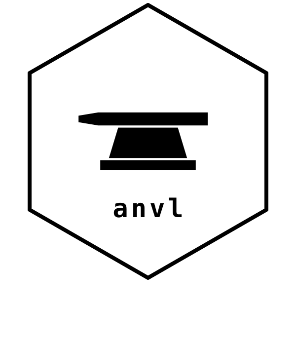

Custom Calls on CUDA
Source:vignettes/articles/custom_calls_cuda.Rmd
custom_calls_cuda.RmdNote: Everything in this article is about the default
"pjrt"backend, running on its CUDA plugin.
Here, we show how to use a custom CUDA kernel in {anvl}. Read the Custom Calls article first if you haven’t already.
The structure of this article is as follows:
- Writing the CUDA kernel
- Writing the handler that launches it
- Building both
- Registering both with {pjrt} and calling the kernel
Step 1: Write the kernel
We split the code into two files: the kernel goes into a
.cu (CUDA) file compiled by nvcc (the NVIDIA
CUDA compiler), and the FFI handler into a .cpp file. We
start by implementing the CUDA kernel for the element-wise
hypot() operation.
// hypot_kernel.cu -- compiled by nvcc
#include <cuda_runtime.h>
template <typename T>
__global__ void hypot_kernel(const T *x, const T *y, T *out, size_t n) {
size_t i = blockIdx.x * static_cast<size_t>(blockDim.x) + threadIdx.x;
if (i < n) out[i] = hypot(x[i], y[i]);
}The launcher starts the kernel on the given stream and returns
NULL on success, and CUDA’s description of the error
otherwise. The handler returns as soon as the kernel is enqueued, so
this check is the only way to report a failed launch; without it, the
error only surfaces, unrelated, at the next CUDA call.
template <typename T>
static const char *launch(void *stream, const T *x, const T *y, T *out,
size_t n) {
if (n == 0) return nullptr; // a launch of zero blocks is itself an error
const int threads = 256;
const int blocks = static_cast<int>((n + threads - 1) / threads);
hypot_kernel<T><<<blocks, threads, 0, static_cast<cudaStream_t>(stream)>>>(
x, y, out, n);
cudaError_t err = cudaGetLastError();
return err == cudaSuccess ? nullptr : cudaGetErrorString(err);
}The handler in the .cpp file reaches the kernel through
launchers declared extern "C", which gives them plain C
symbol names instead of compiler-specific mangled C++ ones, so that the
two files, compiled separately and possibly by different compilers, find
each other when they are linked. Because an extern "C"
function cannot be a template, the .cu file exposes one
launcher per supported data type:
extern "C" const char *mypkg_launch_hypot_f32(void *stream, const float *x,
const float *y, float *out,
size_t n) {
return launch<float>(stream, x, y, out, n);
}
extern "C" const char *mypkg_launch_hypot_f64(void *stream, const double *x,
const double *y, double *out,
size_t n) {
return launch<double>(stream, x, y, out, n);
}Step 2: Write the handler
The handler checks its operands as the CPU handler does, but instead of looping over the elements itself, it passes their pointers to the launcher. These are device pointers, which only the kernel may dereference: as XLA’s custom call guide points out, the handler itself still runs on the CPU.
// hypot_cuda.cpp -- compiled by R's C++ toolchain, no CUDA headers
// [[Rcpp::plugins(cpp20)]]
// [[Rcpp::depends(pjrt)]]
#include <Rcpp.h>
#include <string>
#include "xla/ffi/api/ffi.h"
using namespace xla::ffi;
extern "C" const char *mypkg_launch_hypot_f32(void *stream, const float *x,
const float *y, float *out,
size_t n);
extern "C" const char *mypkg_launch_hypot_f64(void *stream, const double *x,
const double *y, double *out,
size_t n);
static Error do_hypot_cuda(void *stream, AnyBuffer x, AnyBuffer y,
Result<AnyBuffer> out) {
size_t n = out->element_count();
if (x.element_count() != n || y.element_count() != n) {
return Error::InvalidArgument("hypot: operands must have the same size");
}
DataType dt = x.element_type();
if (y.element_type() != dt || out->element_type() != dt) {
return Error::InvalidArgument("hypot: operands and result must have the "
"same dtype");
}
const char *err = nullptr;
switch (dt) {
case DataType::F32:
err = mypkg_launch_hypot_f32(stream, x.typed_data<float>(),
y.typed_data<float>(),
out->typed_data<float>(), n);
break;
case DataType::F64:
err = mypkg_launch_hypot_f64(stream, x.typed_data<double>(),
y.typed_data<double>(),
out->typed_data<double>(), n);
break;
default:
return Error::InvalidArgument("hypot: only f32 and f64 are supported");
}
if (err != nullptr) return Error::Internal(std::string("hypot: ") + err);
return Error::Success();
}Compared to the CPU handler, the binding specification gains one
entry: .Ctx<PlatformStream<void *>>() passes
the CUDA stream on which XLA dispatched the operation, in front of the
buffers. Everything the handler enqueues must go on that stream. As for
the CPU handler, a getter hands the handler to R:
Step 3: Build both
We do not need a system CUDA toolkit for this. On a machine with an
NVIDIA GPU, pjrt::install_pjrt() installs the {pjrt.cuda} package along
with the CUDA plugin, and {pjrt.cuda} provides the CUDA toolkit:
nvcc (the NVIDIA CUDA Compiler), the CUDA headers, and the
CUDA runtime library, whose locations
pjrt.cuda::bin_path(),
pjrt.cuda::include_path() and
pjrt.cuda::lib_path() report. {pjrt.cuda} is Linux only, as
is the CUDA plugin.
With these, building takes three steps:
-
nvcccompiles the kernel into an object file, with machine code for every GPU generation the kernel should run on. -
Rcpp::sourceCpp()compiles the handler as in the CPU article. - The handler’s shared library is linked against the kernel’s object
file and {pjrt.cuda}’s CUDA runtime library, both passed to
Rcpp::sourceCpp()through thePKG_LIBSenvironment variable. The shared library also has to record where that runtime library lives, so that it is found when R loads the handler.
Step 4: Register and call
Finally, we register both handlers under the same target, in place of the CPU-only registration of the CPU article:
pjrt::pjrt_register_custom_call(
"mypkg_hypot",
list(cpu = hypot_handler_ptr(), cuda = hypot_handler_cuda_ptr())
)From then on, the call of the CPU article runs the kernel whenever its operands live on the GPU:
Using in a package
Offering a custom CUDA kernel comes with various considerations. The core problems are that:
- CRAN’s machines do not have a CUDA toolkit and {pjrt.cuda} cannot be installed there because it downloads the CUDA toolkit at installation time.
- Not every user has an NVIDIA GPU.
While we hope to offer a more structured solution to this in the
future, a currently practical approach is to compile the CUDA code at
run time, either in the package’s .onLoad hook (e.g.,
conditioned on {pjrt.cuda} being installed) or when the function that
requires the CUDA kernel is first called. Only the kernel has to be
compiled at run time: the handler includes no CUDA header, so it is
compiled with the package, like the CPU handler. As the launchers do not
exist yet when the package is installed, the handler cannot be linked
against them; instead, the package compiles the .cu file
with nvcc -shared into a shared library, loads it with
dyn.load(), and hands the addresses of the launchers to the
handler as function pointers. Compiled into a temporary directory, the
kernel has to be recompiled in every new R session; keeping the library
in a persistent directory such as
tools::R_user_dir("mypkg", "cache") compiles it only once.
Instead of nvcc, a package can also use NVRTC (the NVIDIA Runtime
Compiler), which {pjrt.cuda} ships too, to compile the kernel from a
string at run time, and then load and launch it through the CUDA driver
API.